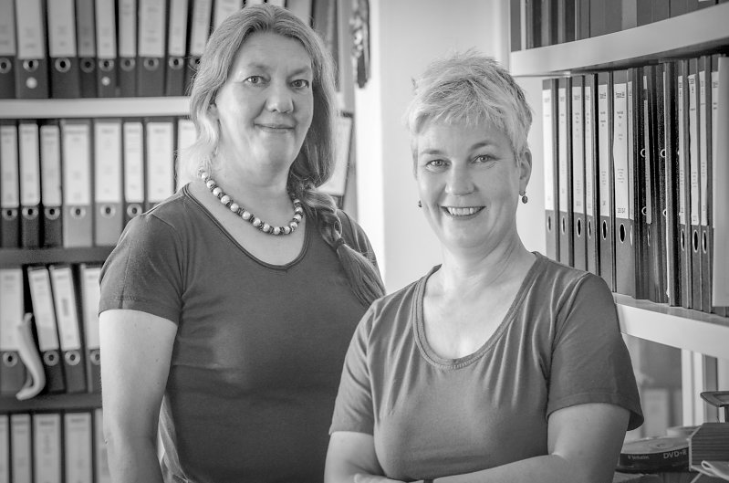
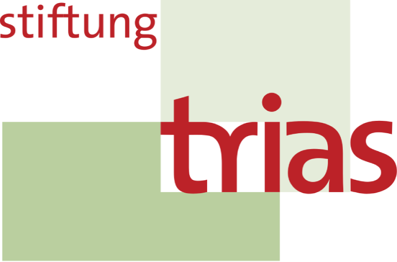

Das Projekt
Die Baugenossenschaft
Wie arbeiten wir im Projekt? Wie wollen wir Nachbarschaft leben? Und wie verwandeln wir unsere Vision in Realität?
Per Definition versteht man unter einer Wohnbaugenossenschaft (auch Wohnungsgenossenschaft oder Baugenossenschaft) einen Zusammenschluss von Menschen mit dem Ziel, ihren Mitgliedern bezahlbaren, sicheren und qualitativ hochwertigen Wohnraum zur Verfügung zu stellen. Sie funktionieren nach dem Prinzip der Selbsthilfe, Selbstverwaltung und Selbstverantwortung. Anders als bei klassischen Mietverhältnissen, bei denen ein Vermieter Gewinne erzielen will, sind Genossenschaften nicht gewinnorientiert.
Wer in unserer Genossenschaft Mitglied wird und in das Gebäude einzieht, wird kein Mieter, sondern Miteigentümer der Genossenschaft mit lebenslangem Wohnrecht. Damit verbunden ist ein finanzielles Engagement, denn frisch gegründet, ist zunächst kein Kapital vorhanden: Durch Pflichtanteile und Privatkredite bringen unsere Mitglieder Gelder ein und finanzieren zusammen mit Krediten aus Genossenschaftsbanken (für unser Projekt die GLS) den Kauf, den Umbau und die Sanierung des Gebäudes. Mitglieder zahlen also keine Miete, sondern Nutzungsentgelder. Damit werden Rücklagen gebildet und der GLS-Kredit abbezahlt. Die Höhe von Pflichtanteilen und Nutzungsentgelten ist dabei abhängig von der Wohnungsgröße. Die Pflichtanteile werden bei Auszug/ Austritt zurückerstattet.
Neben dem finanziellen Engagement und genauso wichtig: Mitglieder bringen ihre Zeit, individuellen Fähigkeiten und ihre Tatkraft in das Projekt ein. Als Bauherr:innen arbeiten wir in Arbeitsgruppen der Bauleitung zu und kontrollieren über die Projektsteuerung fortlaufend den zeitlichen und finanziell abgesteckten Rahmen des Bauprojektes.
Die Genossenschaft Ländlich Wohnen e.G. besteht aktuell aus rund 40 Mitgliedern, verteilt auf 2 Wohnprojekte in Selbstorganisation. Als Gremien fungieren Vorstand und Aufsichtsrat. Der Vorstand führt die Geschäfte und ist Vertragspartner für alle Gewerke und Dienstleister. Er wird vom Aufsichtsrat ernannt und kontrolliert. Projektbezogene Entscheidungen werden gemeinsam getroffen. Dabei hat jedes Mitglied eine Stimme, unabhängig von der Anzahl der erworbenen Anteile (Demokratieprinzip). In den Mitgliederversammlungen (1–2 Mal pro Jahr) wird gemeinschaftlich entschieden, beispielsweise über den Kurs der Genossenschaft oder die Wahl des Aufsichtsrates. Überschüsse werden nicht an Aktionäre ausgeschüttet, sondern in die Instandhaltung, Modernisierung oder in den Neubau von Wohnungen investiert.
In der Projektierungs- und Bauphase organisieren sich die Mitglieder in Arbeitsgruppen (Bsp. Finanzen, Bemusterung für die geplante Innenausstattung, Öffentlichkeitsarbeit zur Werbung weiterer Mitglieder, Bau, Projektsteuerung, Gartengestaltung, Events etc.). Je nach eigenen Vorlieben und Fähigkeiten kann jedes Mitglied mit organisatorischem oder tatkräftigem Einsatz das Projekt Schritt für Schritt voranbringen. So verwandeln wir unsere Vision nach und nach in Realität.
Einmal eingezogen, eröffnen sich unbegrenzte Möglichkeiten des Miteinanders - ob in der Gemeinschaftsküche und den Gemeinschaftsräumen oder im Garten. Wir wollen zudem über unser Projekt hinaus mit den Bewohnern des Dorfes und der Umgebung aktiv in Kontakt treten. Mit dem benachbarten Landwerk, dem Rosenwaldhof und Haus Birnbaum gibt es zahlreiche Kooperationsmöglichkeiten, vor allem hinsichtlich der Planung von Events, Lieferverträgen mit Foodcoops und dem Mobilitätskonzept zum Anschluss an den Bahnhof.
Wer ist die Bauherrin?
Am Anfang eines jeden genossenschaftlichen Wohnprojektes steht die Gründung einer Genossenschaft. Die Genossenschaft Ländlich Wohnen eG mit Sitz in Werder (Havel) ist die Bauherrin und seit 23.02.2026 Besitzerin des Gebäudes in der Bergstraße 1.
mehr zur Genossenschaft unter:
https://laendlichwohnen.de/
Wer übernimmt die Bauleitung?
Unser Projekt wird begleitet von dem Architektinnenbüro Winterer & Mohr. Mit mehr als 30 Jahren Erfahrung arbeiten Irene Mohr und Karin Winterer vorrangig in der Projektentwicklung und Projektrealisierung (Bauleitung) für Wohngenossenschaften.
Die Basis vieler Projekte sind brach liegende Industriebauten der Gründerzeit oder historische Bestandsbauten deren sensible Nutzung es mit heutigen Ansprüchen und energetischen Anforderungen zu verbinden gilt.
Karin Winterer, die unser Projekt begleitet, wohnt selbst seit mehr als 10 Jahren im Uferwerk, ein von dem Büro verwirklichtes genossenschaftliches und generationsübergreifendes Wohnprojekt in Werder an der Havel.
Wir fühlen uns bei so viel Kompetenz und Leidenschaft bestens betreut 😊

Irene Mohr und Karin Winterer (von links)
Mehr Informationen zu bereits realisierten Projekten:
https://winterer-mohr.eu/koken/sets/bauten/
Wer ist Eigentümer des Grundstücks?
Die Genossenschaft hat nur das Gebäude käuflich erworben. Das Grundstück hingegen wurde mit einem Erbpachtvertrag belegt und gehört der Stiftung TRIAS. Die Idee dahinter: Grund und Boden der Spekulation zu entziehen. Die Genossenschaft ist also Besitzerin des Gebäudes, für das Grundstück ist die Genossenschaft Pächterin auf unbefristete Zeit.

Mehr zur Stiftung findet ihr auf deren Webseite:
https://www.stiftung-trias.de/home/